Dwóch baristów przez trzy dni targowe. Przyjeżdżamy 4 października wieczorem, rano kalibrujemy młynki i od 9:00 do końca targów kawa smakuje tak samo.
Wszystko, o co Pan prosił: obsługa, dojazd, nocleg i wyżywienie. Wariant ze sprzętem wyceniamy osobno, więc można je porównać jednym kliknięciem.
Każdy punkt z Pana listy i to, jak go spełniamy. Tę sekcję można przekazać dalej do Miasta Wrocławia.
W cenie: Patryk i Alicja, bariści z wieloletnią praktyką przy specialty i na targach zagranicznych, co traktujemy jako doświadczenie równoważne. Jeśli certyfikat SCA jest konieczny, dajemy Kubę Kalusińskiego i Dominikę Piotrowską (+1 500 zł za osobę). Wtedy skany certyfikatów wysyłamy od razu.
Od 2013 roku ponad 2 000 eventów, w tym stoiska na targach w Polsce i za granicą.
Kalibrujemy przed otwarciem hali i kontrolujemy ekstrakcję wagą i czasem co kilka godzin, bo w hali zmienia się temperatura i wilgotność.
Bariści opowiedzą gościom o pochodzeniu, obróbce i profilu smakowym podawanego ziarna. Przed targami dostajemy od Państwa kartę kawy.
Standard w każdym napoju mlecznym, także w szczycie ruchu.
Każdy z baristów w obu składach obsługuje gości po angielsku.
Przyjazd dzień wcześniej, jak Pan proponował. Po ostatnim dniu pakujemy stanowisko i wracamy.
Patryk i Alicja pracują razem na stoiskach targowych i są w cenie podstawowej. Jeśli klient wymaga certyfikatu SCA, zamiast nich mogą przyjechać Kuba i Dominika.
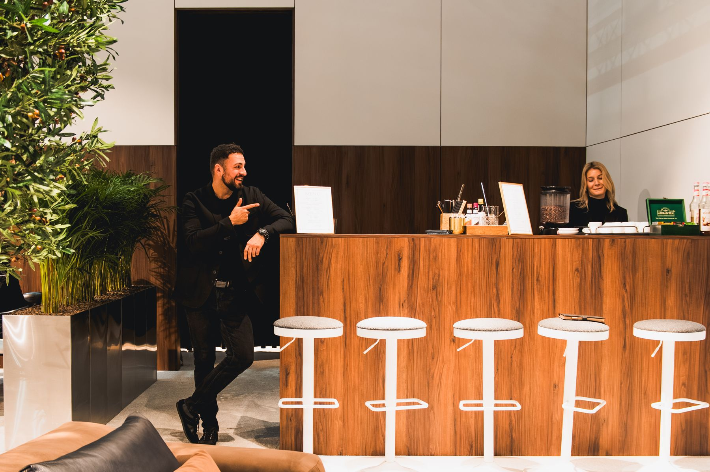
Patryk Alicja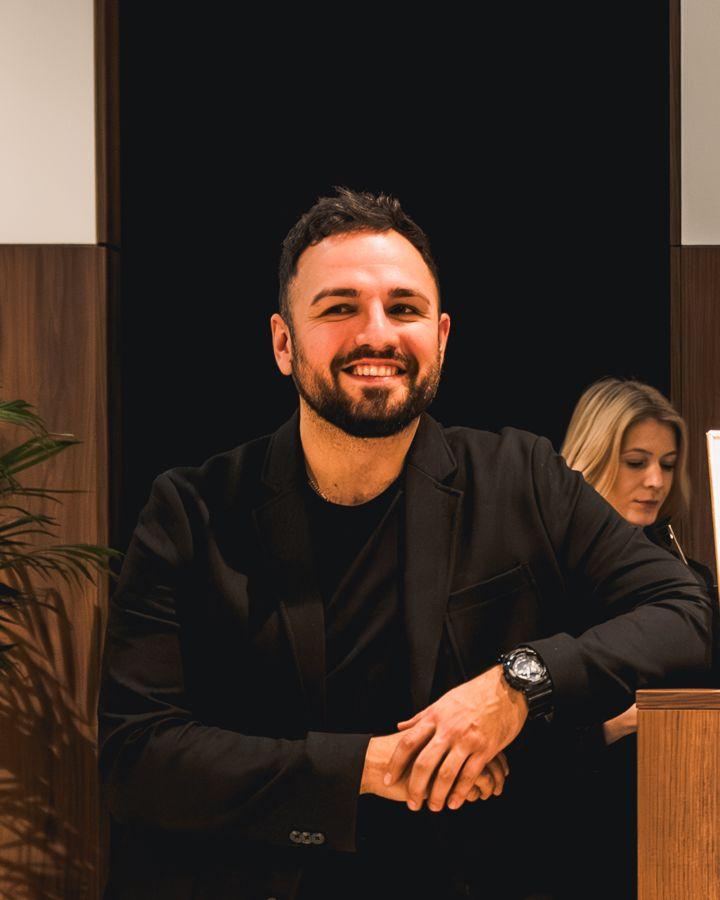
Obsługiwał stoiska na targach za granicą: Mediolan, Birmingham i Paryż (Sits), Frankfurt i Budapeszt (Niczuk), Düsseldorf (BCS).
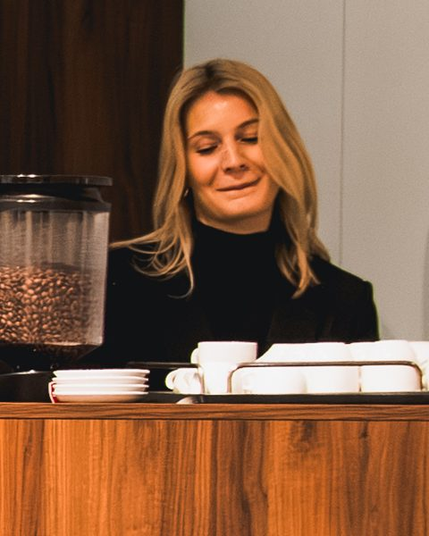
Baristka Pimp My Bar na eventach firmowych i targach kawowych. Na co dzień kieruje Młyńską 12 w Poznaniu, kompleksem z restauracją The Time rekomendowaną w Przewodniku Michelin.
Kuba i Dominika mają certyfikaty SCA i doświadczenie z mistrzostw. Można wziąć jedno z nich w parze z Patrykiem albo oboje. Wybór jest w wycenie wyżej.
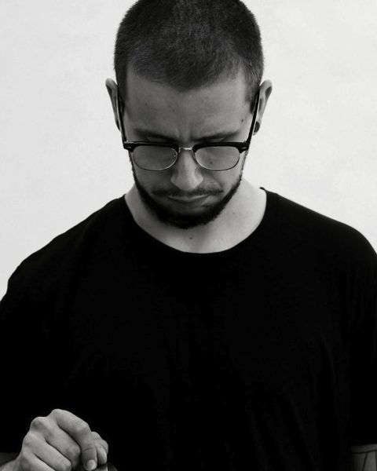
Barista z Wągrowca, od lat na poznańskiej scenie kawowej, m.in. w Brisman Kawowy Bar. Sześciokrotny finalista Mistrzostw Polski Brewers Cup (najlepsze compulsory w finale 2020). Założyciel Guest Coffee: sam importuje i wypala kawy specialty, pisze dla Coffeedesk i prowadzi warsztaty kawowe.
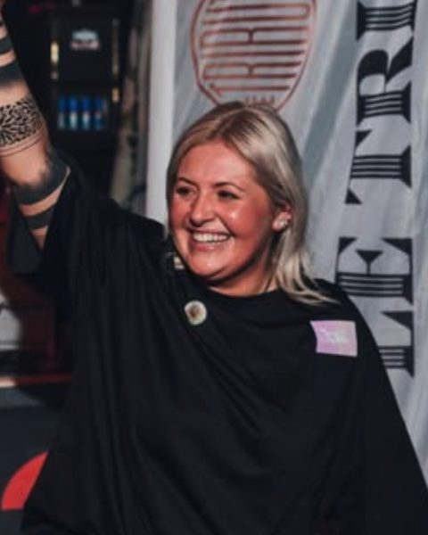
Zaczynała w Poznaniu, pracowała w Berlinie, od kilku lat mieszka w Wiedniu. Dwukrotna Mistrzyni Austrii Barista i uczestniczka World Barista Championship 2024 w Busan. Sędzia zawodów kawowych, ekspertka kawy i spirits, prezeska European Speciality Tea Association.
Stoiska, na których stał nasz kawowy bar. Wszystkie zdjęcia pochodzą z naszych realizacji.
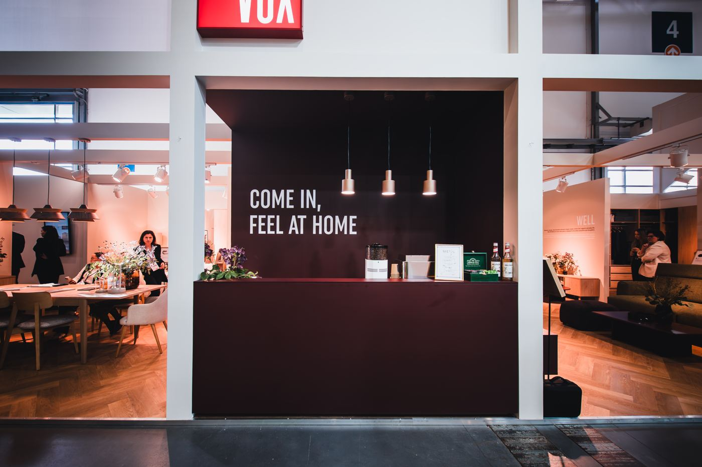
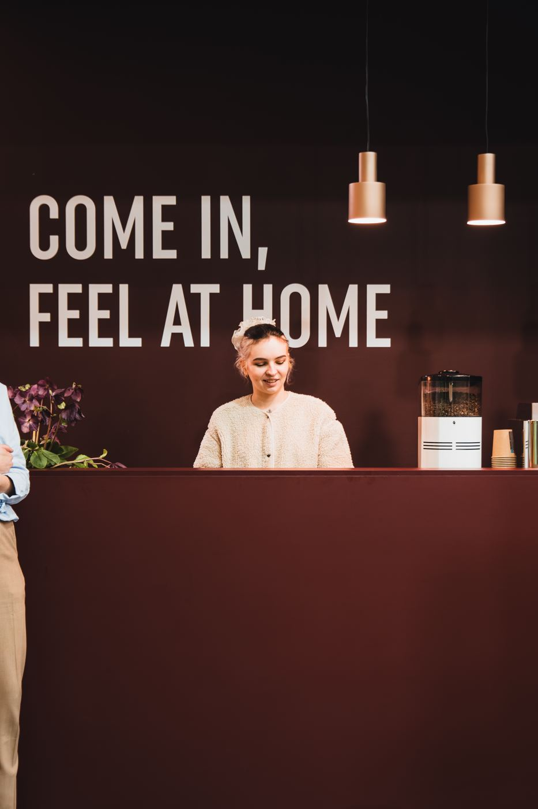
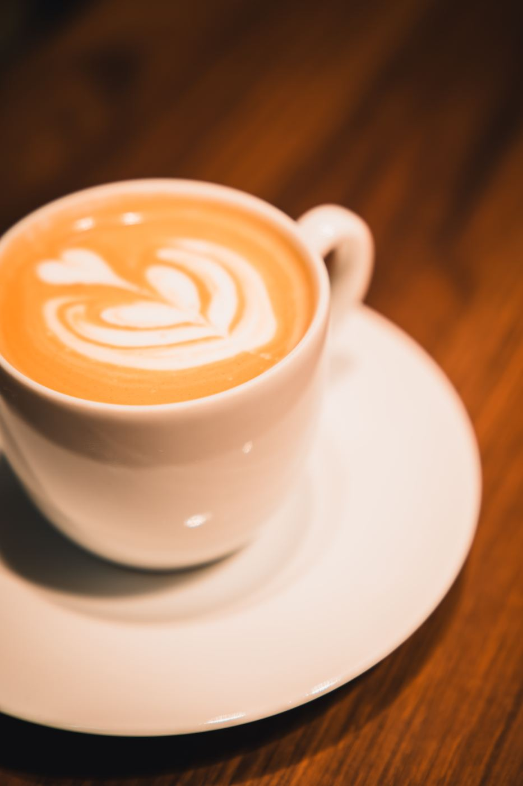
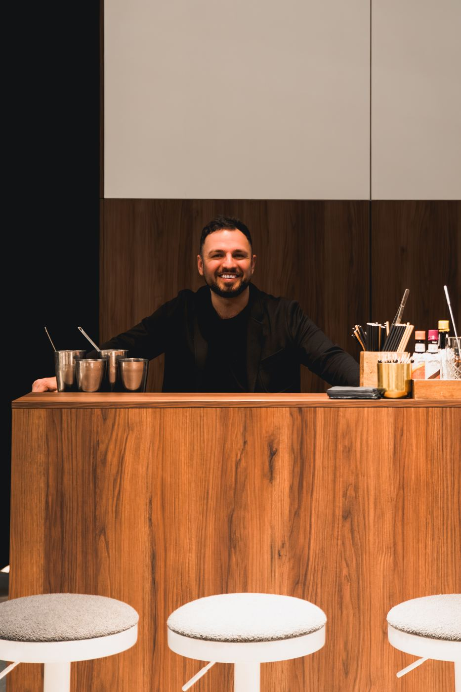
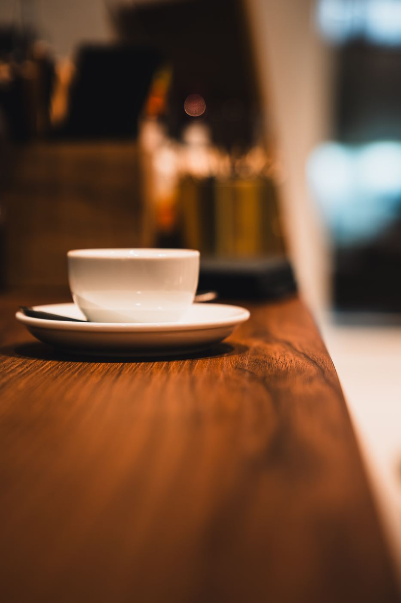
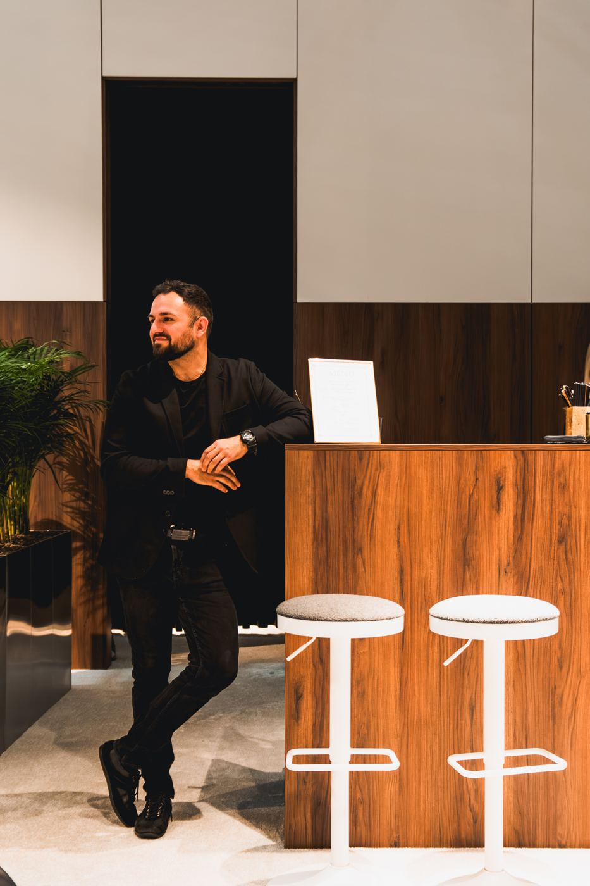
Zobacz film z targówBar kawowy na stoisku Sits na trzech międzynarodowych targach, z tym samym zespołem od pierwszego do ostatniego dnia. Patryk był na każdych z nich.
Film na Instagramie →Stoiska wystawców za granicą: przyjazd dzień wcześniej, kalibracja przed otwarciem, serwis przez całe targi.
Firmowe, targowe i prywatne, w Polsce i za granicą. Kawa, koktajle, a często jedno i drugie na tym samym stoisku.
▶ Film z realizacji na Instagramie →Przywozimy dwa kompletne stanowiska, znamy je na pamięć i kalibrujemy u siebie przed wyjazdem. Państwo zamawiają w Messe tylko przyłącza.
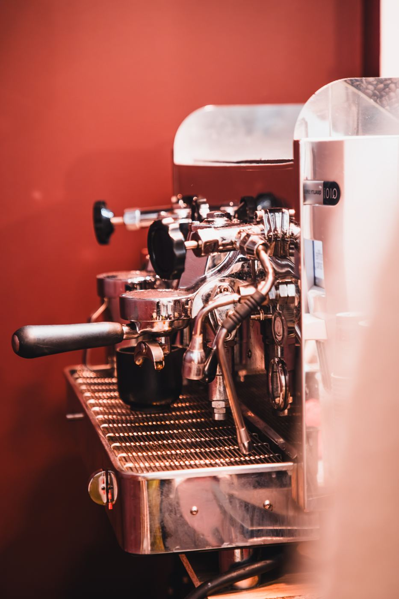
| Stanowisko 1 | Conti CC100, 2 grupy, PID, tryb eco + młynek Quality Espresso Q10 |
|---|---|
| Stanowisko 2 | Iberital IB7, 2 grupy E61 + młynek Quality Espresso Q10 |
| Akcesoria | dzbanki, wagi, ubijaki, knock boxy, filtry i zmiękczacze wody |
| Prąd | 4 gniazda 230 V na osobnych obwodach 16 A: po jednym na każdy ekspres i każdy młynek |
| Woda | przyłącze wody 3/8" i odpływ przy każdym ekspresie; bez przyłącza przywozimy kanistry z pompą |
| Miejsce | ok. 55 × 55 cm blatu na ekspres i 25 × 40 cm na młynek |
Przyłącza w Messe München trzeba zamówić z wyprzedzeniem. Po akceptacji wysyłamy gotową specyfikację do zgłoszenia technicznego stoiska.
Jeśli czegoś tu brakuje, wystarczy odpisać na maila.
Tak. Przy dwóch ekspresach dwugrupowych robimy do 140 napojów na godzinę. Kolejka tworzy się zwykle tylko rano i po przerwie na lunch, a te szczyty obsługujemy bez problemu.
Domyślnie ta, którą zapewnia stoisko. Jeśli chcą Państwo, przywieziemy ziarno specialty z palarni, mleko (także roślinne), herbaty i kubki. Ten dodatek można zaznaczyć w wycenie.
Przed otwarciem kalibrują młynki i ustawiają stanowisko. Po zamknięciu czyszczą ekspresy i młynki i zostawiają bar gotowy na następny dzień. Wszystko to jest w cenie obsługi.
Mamy własny park maszyn. W samochodzie wieziemy zapasowy ekspres i młynek, więc awaria nie zatrzyma serwisu.
Zaliczka przy potwierdzeniu, reszta przelewem po targach na podstawie faktury. Cena jest stała: dojazd, nocleg i wyżywienie są w niej zawarte, bez rozliczania paragonów.
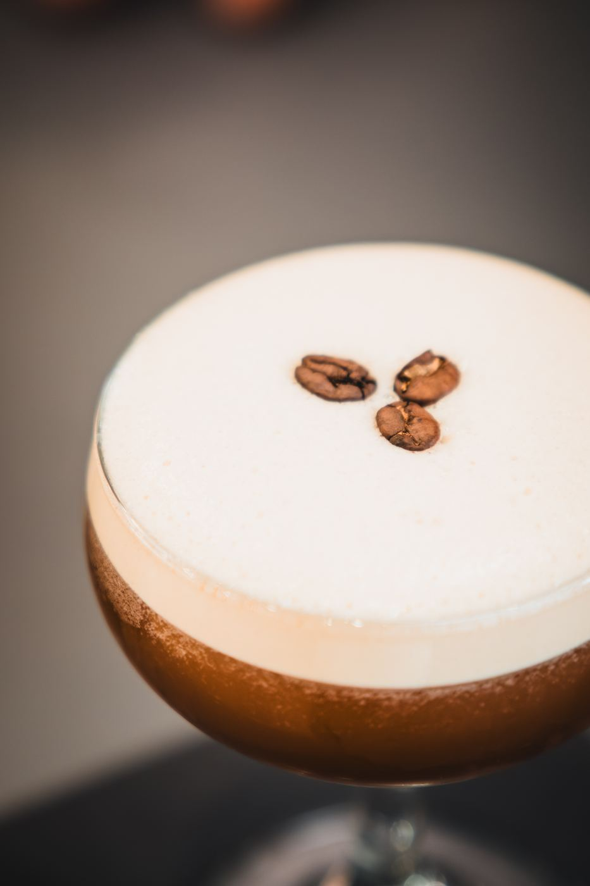
Pimp My Bar zaczynał od koktajli. Ten sam bar po zamknięciu hali może podawać espresso martini i koktajle przygotowywane na żywo. Jeśli planują Państwo spotkanie na stoisku, przygotujemy osobną wycenę.
Proszę odpisać na maila z wybranym wariantem albo zadzwonić. Wysyłamy wtedy umowę i fakturę zaliczkową, a po zaksięgowaniu termin jest Państwa.
Wybrany wariant: sama obsługa, obsada: Patryk i Alicja, 17 300 zł netto